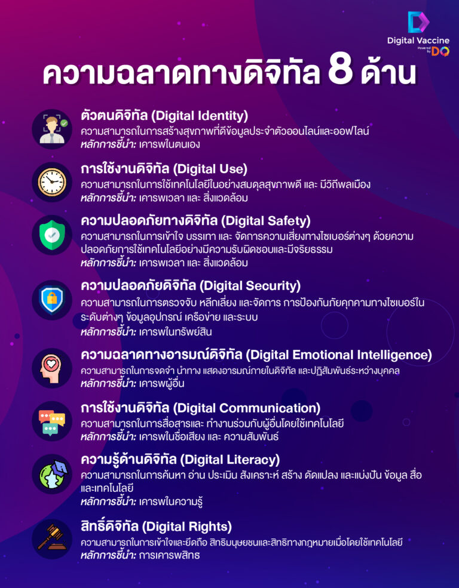

ความเป็นพลเมืองดิจิทัล (Digital Citizenship)
คืออะไร ความเป็นพลเมืองดิจิทัลคือ พลเมืองผู้ใช้งานสื่อดิจิทัลและสื่อสังคมออนไลน์ที่เข้าใจบรรทัดฐานของ การปฏิบัติตัวให้เหมาะสมและมีความรับผิดชอบในการใช้เทคโนโลยี โดยเฉพาะอย่างยิ่ง การสื่อสาร ในยุคดิจิทัลเป็นการสื่อสารที่ไร้พรมแดน สมาชิกของโลกออนไลน์คือ ทุกคนที่ใช้เครือข่ายอินเทอร์เน็ต บนโลกใบนี้ ผู้ใช้สื่อสังคมออนไลน์มีความหลากหลายทางเชื้อชาติ อายุ ภาษา และวัฒนธรรม พลเมือง ดิจิทัลจึงต้องเป็นพลเมืองที่มีความรับผิดชอบ มีจริยธรรม เห็นอกเห็นใจและเคารพผู้อื่น มีส่วนร่วม และมุ่งเน้นความเป็นธรรมในสังคม

- 1. ทักษะในการรักษาอัตลักษณ์ที่ดีของตนเอง (Digital Citizen Identity) ความสามารถในการสร้างและบริหารจัดการอัตลักษณ์ที่ดีของตนเองไว้ได้อย่างดีทั้งในโลกออนไลน์และโลกความจริง
- 2. ทักษะในการรักษาข้อมูลส่วนตัว (Privacy Management) มีดุลพินิจในการบริหารจัดการข้อมูลส่วนตัว โดยเฉพาะการแชร์ข้อมูลออนไลน์เพื่อป้องกันความเป็นส่วนตัวทั้งของตนเองและผู้อื่น
- 3. ทักษะในการคิดวิเคราะห์มีวิจารณญาณที่ดี (Critical Thinking) ความสามารถในการวิเคราะห์แยกแยะระหว่างข้อมูลที่ถูกต้อง และข้อมูลที่ผิด ข้อมูลที่มีเนื้อหาดีและข้อมูลที่เข้าข่ายอันตราย ข้อมูลติดต่อทางออนไลน์ที่น่าตั้งข้อสงสัยและน่าเชื่อถือได้
- 4. ทักษะในการจัดสรรเวลาหน้าจอ (Screen Time Management) ความสามารถในการบริหารเวลาในการใช้อุปกรณ์ยุคดิจิทัล รวมไปถึงการควบคุมเพื่อให้เกิดสมดุลระหว่างโลกออนไลน์ และโลกภายนอก
- 5. ทักษะในการรับมือกับการคุกคามทางโลกออนไลน์ (Cyberbullying Management) ความสามารถในการรับรู้ และรับมือการคุกคามข่มขู่บนโลกออนไลน์ได้อย่างชาญฉลาด
- 6. ทักษะในการบริหารจัดการข้อมูล ที่ผู้ใช้งานมีการทิ้งไว้บนโลกออนไลน์ (Digital Footprints) ความสามารถในการเข้าใจธรรมชาติของการใช้ชีวิตในโลกดิจิทัล ว่าจะหลงเหลือร่อยรอยข้อมูลทิ้งไว้เสมอ รวมไปถึงเข้าใจพลลัพธ์ ที่อาจเกิดขึ้น เพื่อการดูแลสิ่งเหล่านี้อย่างมีความรับผิดชอบ
- 7. ทักษะในการรักษาความปลอดภัยของตนเองในโลกออนไลน์ (Cybersecurity Management) ความสามารถในการป้องกันข้อมูลด้วยการสร้างระบบความปลอดภัยที่เข้มแข็ง และป้องกันการโจรกรรมข้อมูลหรือการโจมตีทางออนไลน์ได้
- 8. ทักษะในการใช้เทคโนโลยีอย่างมีจริยธรรม (Digital Empathy) ความสามารถในการเห็นอกเห็นใจ และสร้างความสัมพันธ์ที่ดีกับผู้อื่นบนโลกออนไลน์